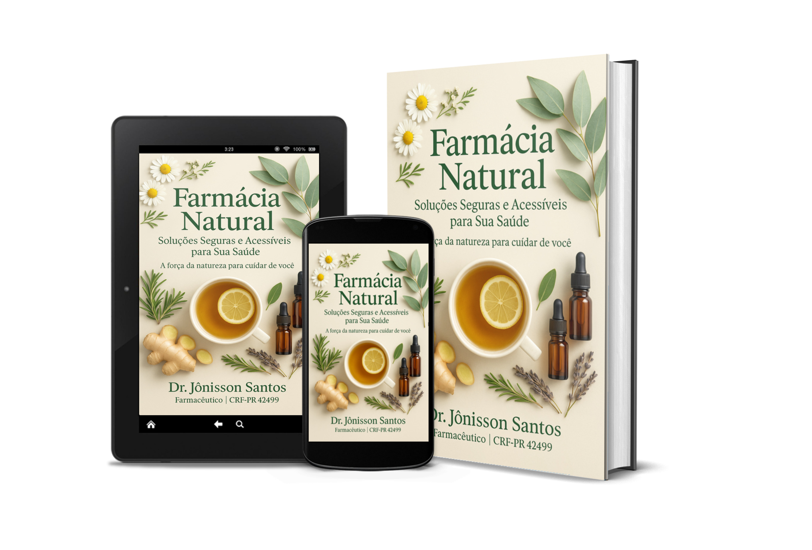
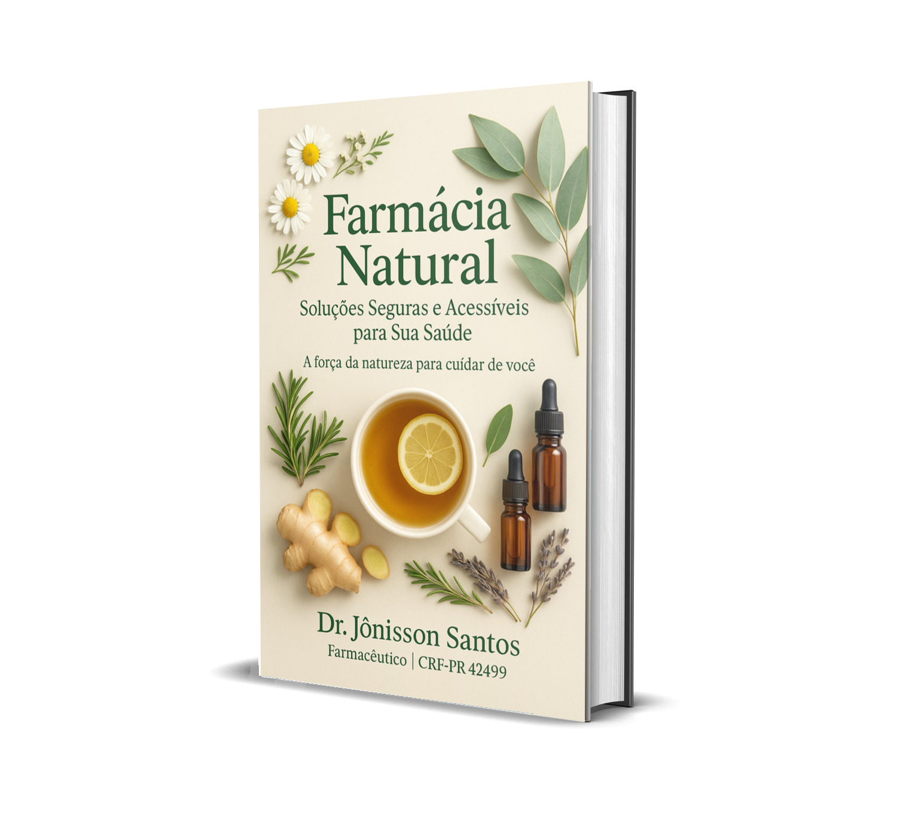

Farmácia Natural
Soluções Seguras e Acessíveis para Sua Saúde
Com o Dr. Jônisson Santos – Farmacêutico | CRF-PR 42499
Conheça o Ebook
Este guia prático reúne soluções naturais para ansiedade, sono, digestão e mais.
Comprar AgoraProdutos Recomendados
Sobre o Dr. Jônisson Santos
Dr. Jônisson Santos é mais que farmacêutico — é um apaixonado por saúde real. Formado em Farmácia (UNIFTC Salvador-BA), pós-graduado em Farmácia Clínica e Hospitalar (Faveni) e habilitado em vacinação. Este e-book é só o começo: cada página traz receitas e uma nova forma de ver a saúde — mais humana, consciente e acessível.